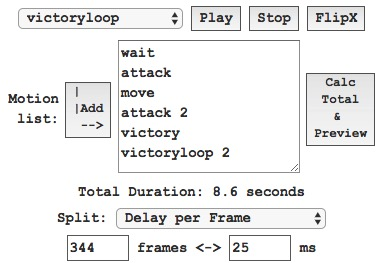

Release notes
0.1.32.0 (2022-02-26)
-
New Tools - atlas resizer
set scale and just drag and drop you atlas files
0.1.31.0 (2022-02-20)
-
FIXED: some bugs in skeleton binary reader
KAIZEN: the first skin is selected when no 'default' skin exists
0.1.30.0 (2021-03-24)
-
chibi-psd 0.3.0 update : anchor points of bones are placed on "bones" folder
0.1.29.4 (2021-02-09)
-
Shows Alert when the sprite is drawn out of the workspace.
0.1.29.3 (2021-02-04)
-
fixed: .skel binary reader
0.1.29.2 (2021-01-25)
-
atlas4x: your custom scale (from 0.01 to 20)
0.1.29.0 (2020-11-24)
-
atlas4x: 2x, 1.6x and 2.56x are selectable
0.1.28.5 (2020-11-05)
0.1.28.0 (2020-11-01)
-
Take a Layered-by-Slots Picture as a PSD
0.1.27.2 (2020-10-31)
-
Multi Texture files : some Spine data has two texture files.
CAUTION !!
You should check names of .png files in the .atlas file.
If the names do not match with these of your "real" png files, you have to fix them.
0.1.27.0 (2020-09-01)
0.1.26.3 (2020-06-09)
-
"Reserve Glasses" removed because chibi-deco was released
0.1.26.0 (2020-05-19)
-
Experimental : save Un-PMA texture (for 4x altas)
0.1.25.0 (2020-05-17)
-
마참내 Fixed: Premultipiled-Alpha issue
(?)
0.1.24.0 (2020-02-03)
-
Skewed Bones Normalizer for DragonBones

|

|
|
Skewed
|
Normalized
|
0.1.23.0 (2020-01-19)
0.1.22.0 (2020-01-11)
-
Experimental : Texture Unpacker
-
Experimental : Saving files as a Zip
0.1.21.0 (2019-10-09)
-
APNG (Animated Portable Network Graphics)
0.1.20.0 (2019-09-22)
0.1.19.0 (2019-09-20)
-
Experimental : Export for Spine3.8 (v-e-r-y buggy)
-
extensions added : .txt , .bytes
0.1.18.0 (2019-09-17)
-
Experimental : Remove flipX timelines for DragonBones, Spine3(tekitoni tested)
0.1.17.0 (2019-08-28)
-
신규추가 新規追加 : reset to setup pose
0.1.16.0 (2019-06-30)
-
Experimental 기능추가 機能追加 : heterochromia
0.1.15.2 (2019-06-28)
-
Experimental 기능추가 機能追加 : CRTFilter
0.1.15.1 (2019-06-18)
-
수정 修正 Fixed : Dorothy Blushing
0.1.15.0 (2019-06-17)
-
수정 修正 Fixed : Welcome to Va-11 Hall-A !!
|
|
|
before
Oh my Eyes |
now
No Problem |
0.1.14.1 (2019-05-09)
-
Experimental 기능추가 機能追加 : Atlas2x for waifu2x
0.1.13.0 (2019-04-21)
-
Experimental 기능추가 機能追加 : DotFilter
0.1.12.6 (2019-04-03)
-
Experimental 기능추가 機能追加 : Clear-Fail Steps
0.1.12.0 (2019-03-16)
-
Experimental 기능추가 機能追加 : save skeleton json
-
Bug Report: "remove glasses" does not work correctly with some R-SD (Dormitory SD)
0.1.11.4 (2019-03-12)
-
개선 改善：json skeleton 포맷 지원 読込み
0.1.11.2 (2019-03-10)
-
Experimental 기능추가機能追加 : 안경 씌우기. メガネかけさせる。
0.1.11.0 (2019-03-07)
-
Experimental 기능추가機能追加 : 안경 제거. メガネ削除。
0.1.10.0 (2018-12-22)
-
Experimental 기능추가機能追加 : 그림자 제거. シャドウ削除。
0.1.9.2 (2018-11-16)
-
수정 修正 : BG Color 변경시 실시간 반영. 背景カラー変更をリアルタイムで反映。
0.1.9.1 (2018-10-13)
-
기능변경 機能変更 : scale 최대값 변경 1.0->4.0 スケイル最大値変更 1.0->4.0
- a request by @FantasyDesk
0.1.9.0 (2018-09-24)
-
신규추가 新規追加 : Bounds X,Y입력 BoundsX,Y入力
-
신규추가 新規追加 : 모션 초기화 버튼. モーションリスト初期化ボタン
0.1.8.1 (2018-08-17)
-
신규추가 新規追加 : Bounds 자동계산. Bounds自動検出
0.1.7.1 (2018-08-09)
-
신규추가 新規追加 : 스케일 (0.1~1.0). スケイル調整(0.1~1.0)
신규추가 新規追加 : GIF저장 버튼. GIF保存ボタン
0.1.6.0 (2018-07-30)
-
신규추가 新規追加 : 멀티 모션 재생. マルチモーション連続再生

-
신규추가 新規追加 : Total프레임 계산방식 "Delay per Frame". 総フレーム数の計算方法：Delay per Frame
0.1.5.0 (2018-07-29)
-
추가追加 : 트랙바(Track bar)
-
수정修正 : 십자선이 배경색에 가려지는 버그. 十字線が背景に隠される障害。
0.1.4.0 (2018-07-18)
-
Added: Workspace is resizable.
0.1.3.3 (2018-07-15)
-
Added: Cross lines to check position x, y
0.1.3.1 (2018-07-12)
-
Fixed : clipping works now.

|
|
|
| clipping region |
before: object overflow |
now: object clipped |
-
Added: Duration of selected motion
-
Added: position (x,y) is now editable.